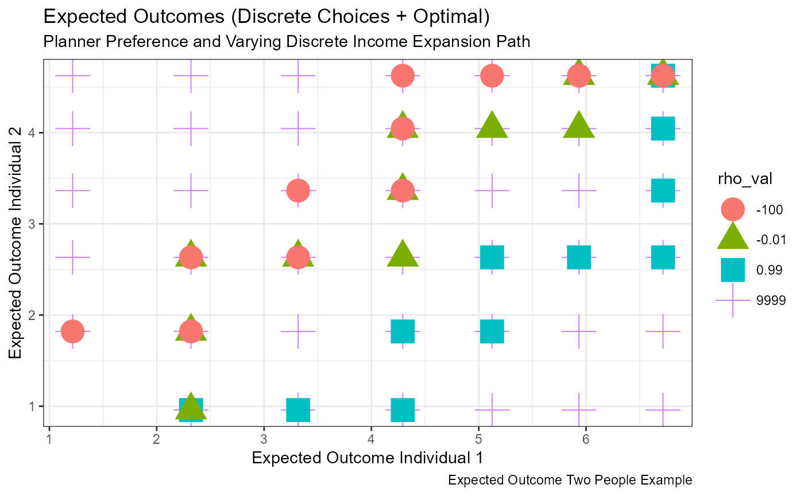

Example Discrete and Bounded-Continuous Optimal Allocation for N=2
Source:vignettes/ffv_opt_n2_fn.Rmd
ffv_opt_n2_fn.RmdTest Theorem 1 and Theorem 2 optimal allocation functions when N=2. Use randomly generated A and alpha parameters for two individuals’ discrete and bounded-continuous allocation problems.
Determine how to optimally allocate resources between two individuals. There are two structures:
- Allocating bounded continuous resources between two indivdiuals, where the effects of resources could be heterogeneous and the costs of resources could differ. This problem is solved by the bounded continuous optimal allocation function
- Allocating discrete resources between two individuals, where the effects of each additional unit on each individual is different and the two resources have the same cost. This problem is solved by the discrete optimal allocation function.
For both problems, we cans solve the optimal allocation problem given different levels of aggregate resources, different planner inequality aversion parameters as well as biases.
The goal below is to generate the data input structure for these two problems in a comparable way. Generate problem solutions by calling the discrete and continuous optimal functions we have created, and generate additional outputs needed to visualize and understand the model solution. The goal is to link the results here to the basics of 2 dimensional indifference and resource sets, and illustrate how the solutions here complete each other, and add to existing results.
Input and Output
This will be written as a function so that a great variety of cases and situations can be simulated and drawn. Intuitively, on the 2D surface, our objective is to show that choices are constrained in choice windows (choice boxes), there is a choice strike zone, in the continuous case, it is a rectangle, in the discrete case, it is a number of possibly uneven points. There will be a rightward expanding line inside this box, that is the income expansion path. In the discrete case, it is not a line, but traces through a set of points. In the continuous case, it is a line with possible kink (only no kink if disects the diagnol of the choice strike zone exactly). Each point along this line is associated with a different level of value, which is utility given optimal choices.
Note that when marginal effects are linear, strike zone budget lines are not straight but backward bending.
The input for strike zone are:
- \(A_i\)
- \(\alpha_i\), which stands in for price as well, \(\frac{\alpha_i}{p_i}\)
- \(\alpha_{il}\), which generates \(A_{il}\) given \(A_i\)
The inputs for the expansion expansion path additional includes:
- \(\left\{\lambda\right\}_q\) some vector of preference
- \(\left\{W\right\}_q\) some vector of price
The outputs of the structure here includes:
- Continuous: A vector of y-intercepts for the continuous strike zone, and one single slope
- Discrete: all choice combination points
- Vector of \(\left\{x^{\ast},y^{\ast},v^{\ast}\right\}_{w, \lambda}\) points for optimal choices as income expands and for different planner preference levels.
Generate Data Inputs
We want to put the continuous and discrete problems in the same scale. They already are by construction, the x and y axis are in terms of \(EH_i\) outcomes. The issue is to put the allocations in the same scale. The continuous and discrete inputs should have approximately the same scale in terms of their effects on outcomes. The aggregate effects of choices on outcomes is \(\mathcal{A}_i = \sum^{W^{units}}_l A_{i,l}\), the aggregate effects of the continuous linear input variable is \(W^{dollar}\cdot\frac{\alpha_i}{p_i}\).
For individual \(i=1,2\), one of the two individuals, we can set their total x-axis scale to be the same:
\[\sum^{W^{units}}_l A_{i,l} = W^{dollar}\cdot\frac{\alpha_i}{p_i}\]
Given the formulation above, the procedure to generate discrete and continuous consistent marginal effects parameters is:
- Start with \(W^{dollar}\), and draw \(\alpha\) and \(p\) from somewhat tightly bounded uniform distribution, so they are not too different.
- Pick any \(W^{units}\), draw uniformly \(A_{il}\) for both \(i=1\) and \(i=2\), they must sum up to the right hand side.
Now there are \(\frac{\alpha_i}{p_i}\) as well as \(A_{il}\). The aggregate effects of allocating all discrete inputs for one individual, and the aggregate effects of allocating all continuous inputs for one individual on outcome for that individual are the same. This makes the discrete and continuous comparison on the same figure possible.
Write this as a function so that we can easily generate additional examples. The function should be able to output for more than two individuals, any number of individuals for testing.
ffi_draw_n_alpha <- function(fl_w_dollar = 100, it_w_units_avg = 5, fl_eh_max_inc_i = 5, fl_min_max_eh_inc_ratio = 1.5, fl_disc_cts_match_ratio = 1.1, fl_A_i_alpha_i1_ratio = 2, fl_A_i_relative_ratio = 3, it_N = 2, it_rand_seed = 123){ #' @param it_w_units_avg float number of goods for cts at max, approxi number for dis #' @param fl_eh_max_inc_i1 float maximum increase EH for one individual #' @param fl_min_max_eh_inc_ratio float ratio of maximum and minimum outcome increase #' @param it_N integer the number of individuals #' @param fl_disc_cts_match_ratio float if 1, disc unit = it_w_units_avg #' @param fl_A_i_alpha_i1_ratio float A_i divide the alphi_il ratio, discrete set this set.seed(it_rand_seed) # Let price be the same, does not matter, only marginal effect over price ratio matters fl_price <- fl_w_dollar/it_w_units_avg fl_cts_alpha_max <- ((fl_eh_max_inc_i*fl_price)/fl_w_dollar) fl_cts_alpha_min <- fl_cts_alpha_max/fl_min_max_eh_inc_ratio # Generate two individuals at min and max, otherwise draw randomly between them as well if (it_N == 1) { stop("Need to draw for at least two individuals") } else { ar_cts_alpha <- c(fl_cts_alpha_min, fl_cts_alpha_max) if (it_N > 2) { ar_cts_alpha_more <- runif((it_N-2), min=fl_cts_alpha_min, max=fl_cts_alpha_max) ar_cts_alpha <- c(ar_cts_alpha, ar_cts_alpha_more) } ar_cts_alpha <- sort(ar_cts_alpha, decreasing=TRUE) } # Aggregate W for Discrete ar_A_i_sum <- fl_w_dollar*(ar_cts_alpha/fl_price) # Draw A_il ar_it_w_units <- sample(round( seq(it_w_units_avg/fl_disc_cts_match_ratio, it_w_units_avg*fl_disc_cts_match_ratio, length.out=it_N)), it_N, replace=TRUE) # Genereate alpha_il ls_ar_alpha_il = apply( cbind(ar_it_w_units, ar_A_i_sum), 1, function(row, min, max) { it_draw <- row[1] fl_sum <- row[2] ar_unif <- runif(it_draw, min=fl_cts_alpha_min, max=fl_cts_alpha_max) ar_unif <- sort(ar_unif, decreasing=TRUE) ar_share <- ar_unif/sum(ar_unif) ar_levels <- (ar_share*fl_sum*fl_disc_cts_match_ratio) ar_share <- ar_share[ar_levels < fl_sum] ar_levels <- ar_levels[ar_levels < fl_sum] return(list(ar_share=ar_share, ar_levels=ar_levels)) }) # Print All message(ls_ar_alpha_il) message(fl_w_dollar/fl_price) sapply(seq(it_N), function(x) sum(ls_ar_alpha_il[[x]]$ar_levels)) message((fl_w_dollar*ar_cts_alpha)/fl_price) # Generate A_i that are consistent with alpha_i scales # randomly draw two individual N2 where the differences is 2x of A_il # Average of alpha_i1 of all individuals fl_alpha_i1_avg = mean(sapply( seq(it_N), function(x) ls_ar_alpha_il[[x]]$ar_levels[1])) # Average of A_i # C:\Users\fan\R4Econ\math\solutions\fs_solu_x_lin.Rmd fl_a <- fl_A_i_relative_ratio fl_b <- fl_alpha_i1_avg fl_A_i_gap = (fl_b*(fl_a - 1))/(1 + fl_a) ar_A_i = runif(it_N,min=fl_b - fl_A_i_gap, max=fl_b + fl_A_i_gap) # return otuputs return(list(ar_A_i = ar_A_i, ls_ar_alpha_il=ls_ar_alpha_il, fl_price = fl_price, ar_cts_alpha = ar_cts_alpha, it_rand_seed=it_rand_seed)) } # Call Function # ls_out_n4 <- suppressMessages(ffi_draw_n_alpha(it_N = 4)) # if called function without seed first, it_rand_seed fixed it_rand_seed <- sample(10^7, 1, replace=T) fl_w_dollar = 100 it_rand_seed <- 4596553 it_N <- 2 ls_out_n2 <- suppressMessages( ffi_draw_n_alpha(fl_w_dollar=fl_w_dollar, it_N = it_N, it_rand_seed=it_rand_seed)) ls_out_n2
## $ar_A_i
## [1] 0.9479133 0.5343949
##
## $ls_ar_alpha_il
## $ls_ar_alpha_il[[1]]
## $ls_ar_alpha_il[[1]]$ar_share
## [1] 0.2196900 0.2078849 0.2035559 0.1901881 0.1786811
##
## $ls_ar_alpha_il[[1]]$ar_levels
## [1] 1.208295 1.143367 1.119558 1.046035 0.982746
##
##
## $ls_ar_alpha_il[[2]]
## $ls_ar_alpha_il[[2]]$ar_share
## [1] 0.2038343 0.1900006 0.1645504 0.1526126 0.1467636 0.1422386
##
## $ls_ar_alpha_il[[2]]$ar_levels
## [1] 0.7473925 0.6966687 0.6033514 0.5595795 0.5381332 0.5215414
##
##
##
## $fl_price
## [1] 20
##
## $ar_cts_alpha
## [1] 1.0000000 0.6666667
##
## $it_rand_seed
## [1] 4596553Generate A and alpha
These parameters persist and are used throughout the rest of the file for allocation allocations. Parameters are more or less shared by discrete and continuous parameters.
spt_img_save <- '../_img/' spt_img_save_draft <- 'C:/Users/fan/Documents/Dropbox (UH-ECON)/repos/HgtOptiAlloDraft/_img/'
# Draw data fl_beta_1 = 0.5 fl_beta_2 = 1-fl_beta_1 fl_w_dollar = 100 it_w_units_avg = 5 it_rand_seed <- sample(10^7, 1, replace=T) it_w_units_avg = 5 it_rand_seed <- 8135788 # it_w_units_avg = 5 # it_rand_seed <- 1234 # it_w_units_avg = 4 # it_rand_seed <- 449879812 it_N <- 2 ls_out_n2 <- suppressMessages( ffi_draw_n_alpha(fl_w_dollar=fl_w_dollar, it_w_units_avg=it_w_units_avg, it_N = it_N, it_rand_seed=it_rand_seed)) # Translate to 2D budget indiff units # fl_e = endowment points fl_A_1 = ls_out_n2$ar_A_i[1] fl_A_2 = ls_out_n2$ar_A_i[2] # fl_alpha_1l = alpha_il # fl_eh_alloc_il = outcome at alloations ar_alpha_1l = ls_out_n2$ls_ar_alpha_il[[1]]$ar_levels ar_alpha_2l = ls_out_n2$ls_ar_alpha_il[[2]]$ar_levels ar_alpha_1l_zr = c(0,ls_out_n2$ls_ar_alpha_il[[1]]$ar_levels) ar_alpha_2l_zr = c(0,ls_out_n2$ls_ar_alpha_il[[2]]$ar_levels) ar_A_1l <- fl_A_1 + cumsum(head(ar_alpha_1l_zr, -1)) ar_A_2l <- fl_A_2 + cumsum(head(ar_alpha_2l_zr, -1)) ar_eh_1l_zr <- fl_A_1 + cumsum(ar_alpha_1l_zr) ar_eh_2l_zr <- fl_A_2 + cumsum(ar_alpha_2l_zr) it_D_1l <- length(ar_alpha_1l) it_D_2l <- length(ar_alpha_2l) # Max Discrete Choice After which budget outside of choice strike zone fully it_w_max <- length(ar_alpha_1l) + length(ar_alpha_2l) ar_w_solve_at_disc <- seq(1, it_w_max) # Continuous fl_alpha_1 = ls_out_n2$ar_cts_alpha[1] fl_alpha_2 = ls_out_n2$ar_cts_alpha[2] fl_price = ls_out_n2$fl_price # continuous choice use discrete max as bounds fl_D_max_1 = length(ar_alpha_1l) fl_D_max_2 = length(ar_alpha_2l) fl_EH_max_1 = fl_A_1 + fl_D_max_1*fl_alpha_1 fl_EH_max_2 = fl_A_2 + fl_D_max_2*fl_alpha_2 # max_dollar fl_w_dollar_max = fl_price*it_w_max ar_w_dollars_strike_at_disc <- seq(0, fl_w_dollar_max, length.out=(it_w_max+1)) ar_w_dollars_solve_at_disc <- seq(0, fl_w_dollar_max, length.out=(it_w_max*6)+1) # print print(paste0('it_rand_seed:',it_rand_seed))
## [1] "it_rand_seed:8135788"## [1] "fl_A_1:1.21673425481374,fl_A_2:0.958163167726895"## [1] "fl_alpha_1:1.21673425481374,fl_alpha_2:0.958163167726895"## [1] "ar_alpha_1l:1.10258826611402" "ar_alpha_1l:0.998256934864124"
## [3] "ar_alpha_1l:0.974318847935741" "ar_alpha_1l:0.832411817148815"
## [5] "ar_alpha_1l:0.809088128226687" "ar_alpha_1l:0.783336005710612"## [1] "ar_alpha_2l:0.862318390675336" "ar_alpha_2l:0.812810517766219"
## [3] "ar_alpha_2l:0.731285183772518" "ar_alpha_2l:0.680349434537137"
## [5] "ar_alpha_2l:0.579903139915456"## [1] "ar_A_1l:1.21673425481374" "ar_A_1l:2.31932252092777"
## [3] "ar_A_1l:3.31757945579189" "ar_A_1l:4.29189830372763"
## [5] "ar_A_1l:5.12431012087645" "ar_A_1l:5.93339824910313"## [1] "ar_A_2l:0.958163167726895" "ar_A_2l:1.82048155840223"
## [3] "ar_A_2l:2.63329207616845" "ar_A_2l:3.36457725994097"
## [5] "ar_A_2l:4.04492669447811"## [1] "ar_eh_1l_zr:1.21673425481374" "ar_eh_1l_zr:2.31932252092777"
## [3] "ar_eh_1l_zr:3.31757945579189" "ar_eh_1l_zr:4.29189830372763"
## [5] "ar_eh_1l_zr:5.12431012087645" "ar_eh_1l_zr:5.93339824910313"
## [7] "ar_eh_1l_zr:6.71673425481375"## [1] "ar_eh_2l_zr:0.958163167726895" "ar_eh_2l_zr:1.82048155840223"
## [3] "ar_eh_2l_zr:2.63329207616845" "ar_eh_2l_zr:3.36457725994097"
## [5] "ar_eh_2l_zr:4.04492669447811" "ar_eh_2l_zr:4.62482983439356"Feasible Allocation and Utility
In this section, we generate all possible combinations of feasible allocation across these two individuals, and also indifference curve points combinations at each choice points.
Discrete Resource Exhausting Allocation Points
Given aggregate units of resources, from 1 to it_w_units_avg.
ls_mt_strike_eh_disc <- vector(mode = "list", length = it_w_units_avg) for (it_w in ar_w_solve_at_disc){ ar_cur_w_ehlt_combo <- c() ar_cur_w_unit_combo <- c() for (it_1l in seq(1, length(ar_alpha_1l_zr))){ fl_eh_1l <- ar_eh_1l_zr[it_1l] for (it_2l in seq(1, length(ar_alpha_2l_zr))){ fl_eh_2l <- ar_eh_2l_zr[it_2l] # included alloca = 0 at L162 it_1l_2l_sum <- (it_1l-1) + (it_2l-1) if (it_1l_2l_sum == it_w){ # at this point, EH_1 and EH_2 # Aggregate Resource is Fully Distributed ar_cur_w_ehlt_combo <- c(ar_cur_w_ehlt_combo, fl_eh_1l, fl_eh_2l) ar_cur_w_unit_combo <- c(ar_cur_w_unit_combo, it_1l-1, it_2l-1) } } } dim(ar_cur_w_ehlt_combo) <- c(2, length(ar_cur_w_ehlt_combo)/2) dim(ar_cur_w_unit_combo) <- c(2, length(ar_cur_w_unit_combo)/2) mt_strike_eh_disc <- cbind(it_w*fl_price, it_w, t(ar_cur_w_ehlt_combo), t(ar_cur_w_unit_combo)) colnames(mt_strike_eh_disc) <- c('w_dollars', 'w_units', 'EH_1l', 'EH_2l', 'D_1l', 'D_2l') ls_mt_strike_eh_disc[[it_w]] <- mt_strike_eh_disc } tb_strike_eh_disc_all <- as_tibble(do.call(rbind, ls_mt_strike_eh_disc)) %>% mutate(vartype = 'discrete') %>% mutate(outtype = 'strike') print(tb_strike_eh_disc_all)
## # A tibble: 41 x 8
## w_dollars w_units EH_1l EH_2l D_1l D_2l vartype outtype
## <dbl> <dbl> <dbl> <dbl> <dbl> <dbl> <chr> <chr>
## 1 20 1 1.22 1.82 0 1 discrete strike
## 2 20 1 2.32 0.958 1 0 discrete strike
## 3 40 2 1.22 2.63 0 2 discrete strike
## 4 40 2 2.32 1.82 1 1 discrete strike
## 5 40 2 3.32 0.958 2 0 discrete strike
## 6 60 3 1.22 3.36 0 3 discrete strike
## 7 60 3 2.32 2.63 1 2 discrete strike
## 8 60 3 3.32 1.82 2 1 discrete strike
## 9 60 3 4.29 0.958 3 0 discrete strike
## 10 80 4 1.22 4.04 0 4 discrete strike
## # ... with 31 more rowsContinuous Choice Strike Zone
The continuous choice strike zone for the CRS problem with bounded choices is a box with straight downward sloping lines through representing budget lines. All lines are parallel to each other. We are interseted in the intercepts and slopes. Slopes are all the same, so just the intercepts. There is a smooth set of intercepts, but for graphing etc, we only need a finite set of lines representing the discrete problem’s resource points. And we need the bounding corner values.
# assume 1 is the x-axis and 2 is the y-axis ffi_cts_strike_crs_slope_intercept <- function(fl_w, fl_alpha_price_rat_1, fl_alpha_price_rat_2, fl_A_1, fl_A_2) { fl_slope = (-1)*(fl_alpha_price_rat_2/fl_alpha_price_rat_1) fl_intercept = fl_w*fl_alpha_price_rat_2 + (fl_alpha_price_rat_2/fl_alpha_price_rat_1)*fl_A_1 + fl_A_2 return(list(fl_slope=fl_slope, fl_intercept=fl_intercept)) }
Call the continuous slope generator.
# Define Marginal Effects and Price Ratios fl_alpha_price_rat_1 <- fl_alpha_1/fl_price fl_alpha_price_rat_2 <- fl_alpha_2/fl_price # Continuous slope generator ls_ar_draws_shares = sapply(ar_w_dollars_strike_at_disc, ffi_cts_strike_crs_slope_intercept, fl_alpha_price_rat_1=fl_alpha_price_rat_1, fl_alpha_price_rat_2=fl_alpha_price_rat_2, fl_A_1=fl_A_1, fl_A_2=fl_A_2) mt_ar_draws_shares <- cbind(ar_w_dollars_strike_at_disc, as_tibble(t(ls_ar_draws_shares)) %>% unnest()) %>% rowid_to_column(var = "row_ctr")
## Warning: `cols` is now required when using unnest().
## Please use `cols = c(fl_slope, fl_intercept)`# Print results print(mt_ar_draws_shares)
## row_ctr ar_w_dollars_strike_at_disc fl_slope fl_intercept
## 1 1 0 -0.6666667 1.769319
## 2 2 20 -0.6666667 2.435986
## 3 3 40 -0.6666667 3.102653
## 4 4 60 -0.6666667 3.769319
## 5 5 80 -0.6666667 4.435986
## 6 6 100 -0.6666667 5.102653
## 7 7 120 -0.6666667 5.769319
## 8 8 140 -0.6666667 6.435986
## 9 9 160 -0.6666667 7.102653
## 10 10 180 -0.6666667 7.769319
## 11 11 200 -0.6666667 8.435986
## 12 12 220 -0.6666667 9.102653A grid of x-points and corresponding y-points at each of the slopes
ls_mt_strike_eh_cts <- apply(mt_ar_draws_shares, 1, function(row) { it_row_ctr <- row[1] fl_w_dollars <- row[2] fl_slope <- row[3] fl_intercept <- row[4] ar_EH1 <- seq(fl_A_1, fl_EH_max_1, length.out=100) ar_EH2 <- fl_intercept + fl_slope*ar_EH1 ar_EH1 <- ar_EH1[ar_EH2<=fl_EH_max_2] ar_EH2 <- ar_EH2[ar_EH2<=fl_EH_max_2] ar_EH1 <- ar_EH1[ar_EH2>=fl_A_2] ar_EH2 <- ar_EH2[ar_EH2>=fl_A_2] ar_D_1l <- (ar_EH1 - fl_A_1)/fl_alpha_1 ar_D_2l <- (ar_EH2 - fl_A_2)/fl_alpha_2 fl_w_units <- (fl_w_dollars/(fl_price)) mt_strike_eh_cts <- cbind(fl_w_dollars, fl_w_units, ar_EH1, ar_EH2, ar_D_1l, ar_D_2l) rownames(mt_strike_eh_cts) <- NULL colnames(mt_strike_eh_cts) <- c('w_dollars', 'w_units', 'EH_1l', 'EH_2l', 'D_1l', 'D_2l') return(mt_strike_eh_cts) }) tb_strike_eh_cts_all <- as_tibble(do.call(rbind, ls_mt_strike_eh_cts)) %>% mutate(vartype = 'continuous') %>% mutate(outtype = 'strike') print(head(tb_strike_eh_cts_all, 10))
## # A tibble: 10 x 8
## w_dollars w_units EH_1l EH_2l D_1l D_2l vartype outtype
## <dbl> <dbl> <dbl> <dbl> <dbl> <dbl> <chr> <chr>
## 1 0 0 1.22 0.958 0 0 continuous strike
## 2 20 1 1.22 1.62 0 1. continuous strike
## 3 20 1 1.28 1.58 0.0606 0.939 continuous strike
## 4 20 1 1.34 1.54 0.121 0.879 continuous strike
## 5 20 1 1.40 1.50 0.182 0.818 continuous strike
## 6 20 1 1.46 1.46 0.242 0.758 continuous strike
## 7 20 1 1.52 1.42 0.303 0.697 continuous strike
## 8 20 1 1.58 1.38 0.364 0.636 continuous strike
## 9 20 1 1.64 1.34 0.424 0.576 continuous strike
## 10 20 1 1.70 1.30 0.485 0.515 continuous strikeOptimal Choices
fl_dis_w <- (it_w_units_avg + 1) fl_cts_w <- fl_dis_w # common price ar_rho <- c(0.5, -5) ar_rho <- c(0.99, -0.01, -100) # ar_rho <- c(0.99, -0.01, -6) # ar_rho <- 1 - (10^(c(seq(-2,2, length.out=20))))
Optimal Discrete Choices
Given \(A_i\) and \(\alpha_{il}\), solve for optimal discrete allocation
Build up discrete input frame
# ID and max Discrete Allocation mt_i_D <- cbind(c(1,2), c(it_D_1l, it_D_2l)) colnames(mt_i_D) <- c('id_i', 'D_max_i') tb_i_D <- as_tibble(mt_i_D) # A_i and alpha_il as matrix mt_A_alpha <- rbind(cbind(1, seq(1,it_D_1l), ar_alpha_1l, ar_A_1l, fl_beta_1), cbind(2, seq(1,it_D_2l), ar_alpha_2l, ar_A_2l, fl_beta_2)) colnames(mt_A_alpha) <- c('id_i', 'D_il', 'alpha_il', 'A_il', 'beta_i') # Combine to generate input_il matrix df_input_il <- tb_i_D %>% uncount(D_max_i) %>% rowid_to_column(var = "id_il") %>% left_join(tb_i_D, by='id_i') %>% group_by(id_i) %>% mutate(D_il = row_number()) %>% left_join(as_tibble(mt_A_alpha), by=(c('id_i'='id_i', 'D_il'='D_il')))
Solve for optimal choices.
ls_dis_solu <- suppressWarnings(suppressMessages( ffp_opt_anlyz_rhgin_dis(ar_rho, fl_dis_w, df_input_il, bl_df_alloc_il = TRUE, bl_return_V = TRUE, bl_return_allQ_V = TRUE, bl_return_inner_V = TRUE))) df_queue_il_long_n2 <-ls_dis_solu$df_queue_il_long df_queue_il_wide_n2 <- ls_dis_solu$df_queue_il_wide df_alloc_i_long_n2 <- ls_dis_solu$df_alloc_i_long df_rho_gini_n2 <- ls_dis_solu$df_rho_gini df_alloc_il_long_n2 <- ls_dis_solu$df_alloc_il_long
Solve and select only information relevant for showing how choices change along preference specific income expansion paths. This is very wasteful, but it’s OK. I only output optimal choices in the alloc_i matrix, which is resource specific. So to get the proper income expansion results, resolve at each element of resource from min to max
ls_mt_opti_eh_disc <- apply(cbind(ar_w_solve_at_disc), 1, function(row){ mt_opti_disc <- suppressWarnings(suppressMessages( ffp_opt_anlyz_rhgin_dis( ar_rho, row[1], df_input_il, bl_df_alloc_il = TRUE, bl_return_V = TRUE, bl_return_allQ_V = TRUE, bl_return_inner_V = TRUE)$df_alloc_i_long)) %>% select(rho_val, D_star_i, EH_star_i) %>% pivot_wider(names_from = id_i, values_from = c(D_star_i, EH_star_i)) %>% rename(EH_1l = EH_star_i_1, EH_2l = EH_star_i_2, D_1l = D_star_i_1, D_2l = D_star_i_2) %>% mutate(w_units = row[1], w_dollars = row[1]*fl_price) %>% select(w_dollars, w_units, EH_1l, EH_2l, D_1l, D_2l, rho_val) return(mt_opti_disc) })
## Adding missing grouping variables: `id_i`
## Adding missing grouping variables: `id_i`
## Adding missing grouping variables: `id_i`
## Adding missing grouping variables: `id_i`
## Adding missing grouping variables: `id_i`
## Adding missing grouping variables: `id_i`
## Adding missing grouping variables: `id_i`
## Adding missing grouping variables: `id_i`
## Adding missing grouping variables: `id_i`
## Adding missing grouping variables: `id_i`
## Adding missing grouping variables: `id_i`tb_opti_eh_disc_all <- as_tibble(do.call(rbind, ls_mt_opti_eh_disc)) %>% mutate(vartype = 'discrete') %>% mutate(outtype = 'optimal') print(head(tb_opti_eh_disc_all, 10))
## # A tibble: 10 x 9
## w_dollars w_units EH_1l EH_2l D_1l D_2l rho_val vartype outtype
## <dbl> <int> <dbl> <dbl> <dbl> <dbl> <dbl> <chr> <chr>
## 1 20 1 2.32 0.958 1 0 0.99 discrete optimal
## 2 20 1 2.32 0.958 1 0 -0.01 discrete optimal
## 3 20 1 1.22 1.82 0 1 -100 discrete optimal
## 4 40 2 3.32 0.958 2 0 0.99 discrete optimal
## 5 40 2 2.32 1.82 1 1 -0.01 discrete optimal
## 6 40 2 2.32 1.82 1 1 -100 discrete optimal
## 7 60 3 4.29 0.958 3 0 0.99 discrete optimal
## 8 60 3 2.32 2.63 1 2 -0.01 discrete optimal
## 9 60 3 2.32 2.63 1 2 -100 discrete optimal
## 10 80 4 4.29 1.82 3 1 0.99 discrete optimalOptimal Continuous Choices
Now I take advantage of the bounded linear solution and solve for the continuous allocation problem given the previously generated continuous parameters that are consistent (in the same general scale) as the discrete parameters used for the discrete allocations.
Build up continuous input frame
# ID and max Discrete Allocation # Note the problem here does not explicity mt_cts_Aalphabeta <- cbind(c(1,2), c(fl_A_1, fl_A_2), c(fl_alpha_1, fl_alpha_2), c(fl_beta_1, fl_beta_2)) colnames(mt_cts_Aalphabeta) <- c('id_i', 'A_i', 'alpha_i', 'beta_i') tb_cts_Aalphabeta <- as_tibble(mt_cts_Aalphabeta)
df <- tb_cts_Aalphabeta svr_id_i <- 'id_i' svr_A_i <- 'A_i' svr_alpha_i <- 'alpha_i' svr_beta_i <- 'beta_i' fl_N_agg <- fl_cts_w/fl_price ls_lin_solu_all_rhos <- ffp_opt_anlyz_rhgin(df, svr_id_i, svr_A_i, svr_alpha_i, svr_beta_i, fl_N_agg, ar_rho)
## Warning in FUN(newX[, i], ...): Data vector has only n=2, max-inequality/min-
## gini=0.333333333333333
## Warning in FUN(newX[, i], ...): Data vector has only n=2, max-inequality/min-
## gini=0.333333333333333
## Warning in FUN(newX[, i], ...): Data vector has only n=2, max-inequality/min-
## gini=0.333333333333333
## Warning in FUN(newX[, i], ...): Data vector has only n=2, max-inequality/min-
## gini=0.333333333333333
## Warning in FUN(newX[, i], ...): Data vector has only n=2, max-inequality/min-
## gini=0.333333333333333
## Warning in FUN(newX[, i], ...): Data vector has only n=2, max-inequality/min-
## gini=0.333333333333333df_opti_alloc_all_rho_n2 <- ls_lin_solu_all_rhos$df_opti_alloc_all_rho mt_opti_alloc_all_rho_n2 <- ls_lin_solu_all_rhos$mt_opti_alloc_all_rho mt_expc_outcm_all_rho_n2 <- ls_lin_solu_all_rhos$mt_expc_outcm_all_rho mt_gini_n2 <- ls_lin_solu_all_rhos$mt_gini
Combine results so that the continuous optimal choices’ outputs are in the same dataframe structure as discrete and continuous strike zone choice sets and the discrete optimal solution points
ls_mt_opti_eh_cts <- apply( cbind(ar_w_dollars_solve_at_disc), 1, function(row){ fl_w_dollars <- row[1] fl_w_units <- fl_w_dollars/fl_price ls_lin_solu_all_rhos <- suppressWarnings(suppressMessages( ffp_opt_anlyz_rhgin( df, svr_id_i, svr_A_i, svr_alpha_i, svr_beta_i, fl_w_units, ar_rho))) mt_opti_alloc_all_rho_n2 <- ls_lin_solu_all_rhos$mt_opti_alloc_all_rho mt_expc_outcm_all_rho_n2 <- ls_lin_solu_all_rhos$mt_expc_outcm_all_rho mt_opti_cts <- cbind(fl_w_dollars, fl_w_units, t(mt_expc_outcm_all_rho_n2), t(mt_opti_alloc_all_rho_n2), ar_rho) colnames(mt_opti_cts) <- c('w_dollars', 'w_units', 'EH_1l', 'EH_2l', 'D_1l', 'D_2l', 'rho_val') return(as_tibble(mt_opti_cts)) }) tb_opti_eh_cts_all <- as_tibble(do.call(rbind, ls_mt_opti_eh_cts)) %>% mutate(vartype = 'continuous') %>% mutate(outtype = 'optimal') print(head(tb_opti_eh_cts_all, 10))
## # A tibble: 10 x 9
## w_dollars w_units EH_1l EH_2l D_1l D_2l rho_val vartype outtype
## <dbl> <dbl> <dbl> <dbl> <dbl> <dbl> <dbl> <chr> <chr>
## 1 0 0 1.22 0.958 0 0 0.99 continuous optimal
## 2 0 0 1.22 0.958 0 0 -0.01 continuous optimal
## 3 0 0 1.22 0.958 0 0 -100 continuous optimal
## 4 3.33 0.167 1.38 0.958 0.167 0 0.99 continuous optimal
## 5 3.33 0.167 1.38 0.958 0.167 0 -0.01 continuous optimal
## 6 3.33 0.167 1.22 1.07 0 0.167 -100 continuous optimal
## 7 6.67 0.333 1.55 0.958 0.333 0 0.99 continuous optimal
## 8 6.67 0.333 1.49 0.998 0.274 0.0594 -0.01 continuous optimal
## 9 6.67 0.333 1.22 1.18 0 0.333 -100 continuous optimal
## 10 10 0.5 1.72 0.958 0.5 0 0.99 continuous optimalBound Continuous Choices
There are hard bounds on the level of allocations allowed at most for the two individuals. If allocation max exceeded for person \(i\) but not person \(j\), then distribute allocation from \(i\) to \(j\).
- generate new D variable for amount that exceeds bounds.
- reset the excess allocation columns so that excess with existing does not exceed individual bound, cross \(i\) and \(j\)
- apply function to add to existing outcome additional allocation multiplied by marginal effects.
# 1. generate new *D* variable for amount that exceeds bounds. tb_opti_eh_cts_all <- tb_opti_eh_cts_all %>% mutate(D_1l_excess = case_when(D_1l > fl_D_max_1 ~ (D_1l - fl_D_max_1), TRUE ~ 0), D_2l_excess = case_when(D_2l > fl_D_max_2 ~ (D_2l - fl_D_max_2), TRUE ~ 0)) %>% select(w_dollars, EH_1l, EH_2l, D_1l, D_2l, D_1l_excess, D_2l_excess, everything()) # 2. if both exceed, then reset outcomes for both tb_opti_eh_cts_all <- tb_opti_eh_cts_all %>% mutate(EH_1l = case_when(D_1l_excess > 0 & D_2l_excess > 0 ~ EH_1l - D_1l_excess*(fl_alpha_1), TRUE ~ EH_1l), EH_2l = case_when(D_1l_excess > 0 & D_2l_excess > 0 ~ EH_2l - D_2l_excess*(fl_alpha_2), TRUE ~ EH_2l)) # 3. 1 exceeds but 2 does not tb_opti_eh_cts_all <- tb_opti_eh_cts_all %>% mutate(EH_1l = case_when(D_1l_excess > 0 & D_2l_excess == 0 ~ EH_1l - D_1l_excess*(fl_alpha_1), TRUE ~ EH_1l), EH_2l = case_when(D_1l_excess > 0 & D_2l_excess == 0 ~ EH_2l + D_1l_excess*(fl_alpha_2), TRUE ~ EH_2l)) # %>% # mutate(EH_2l = # case_when(EH_2l >= fl_EH_max_2 ~ fl_EH_max_2, # TRUE ~ EH_2l)) # 4. 2 exceeds but 1 does not tb_opti_eh_cts_all <- tb_opti_eh_cts_all %>% mutate(EH_1l = case_when(D_1l_excess == 0 & D_2l_excess > 0 ~ EH_1l + D_2l_excess*(fl_alpha_1), TRUE ~ EH_1l), EH_2l = case_when(D_1l_excess == 0 & D_2l_excess > 0 ~ EH_2l - D_2l_excess*(fl_alpha_2), TRUE ~ EH_2l)) %>% # mutate(EH_1l = # case_when(EH_1l > fl_EH_max_1 ~ fl_EH_max_1, # TRUE ~ EH_1l)) %>% select(-D_1l_excess, -D_2l_excess)
Combine Discrete and Continuous Optimal Choices Evaluate Value
Combine the constrained choice sets and optimal choices together. Then evaluate utility at optimal choices
# Combine optimal choices as well as choicesets tb_all_points <- rbind(tb_strike_eh_disc_all %>% mutate(rho_val = NA), tb_opti_eh_disc_all, tb_strike_eh_cts_all %>% mutate(rho_val = NA), tb_opti_eh_cts_all) # Evaluate to obtain Value at Optimal Choices and Utility at Other # choice points. ffi_util_eval <- function(EH_1l, EH_2l, rho_val) { fl_util = (fl_beta_1*(EH_1l^rho_val) + fl_beta_2*(EH_2l^rho_val))^(1/rho_val) return(fl_util) } tb_all_points <- tb_all_points %>% mutate(val_at_choices = ffi_util_eval(EH_1l, EH_2l, rho_val)) # Summary results summary(tb_all_points)
## w_dollars w_units EH_1l EH_2l
## Min. : 0.0 Min. : 0.000 Min. :1.217 Min. :0.9582
## 1st Qu.: 80.0 1st Qu.: 4.000 1st Qu.:2.717 1st Qu.:1.7255
## Median :113.3 Median : 5.667 Median :4.292 Median :2.6333
## Mean :110.7 Mean : 5.533 Mean :4.275 Mean :2.6304
## 3rd Qu.:143.3 3rd Qu.: 7.167 3rd Qu.:5.883 3rd Qu.:3.5440
## Max. :220.0 Max. :11.000 Max. :7.217 Max. :4.6248
##
## D_1l D_2l vartype outtype
## Min. : 0.000 Min. :0.0000 Length:777 Length:777
## 1st Qu.: 1.500 1st Qu.:0.9513 Class :character Class :character
## Median : 3.000 Median :2.3139 Mode :character Mode :character
## Mean : 3.144 Mean :2.3890
## 3rd Qu.: 4.599 3rd Qu.:3.8182
## Max. :11.000 Max. :6.7420
##
## rho_val val_at_choices
## Min. :-100.00 Min. :0.9648
## 1st Qu.:-100.00 1st Qu.:2.3130
## Median : -0.01 Median :3.4663
## Mean : -33.01 Mean :3.3946
## 3rd Qu.: 0.99 3rd Qu.:4.3213
## Max. : 0.99 Max. :5.7522
## NA's :543 NA's :543Generate Indifference Curves at Selected Points
library(dplyr, pos=length(search())) # A as x-axis, need bounds on A fl_A_min = 0.01 fl_A_max = it_D_1l+it_D_1l/2 it_A_grid = 1000 # Define parameters # ar_lambda <- 1 - (10^(c(seq(-2,2, length.out=3)))) ar_beta <- fl_beta_1 # Select v_points # Indifference at three points, min, max and middle of allocations # & (rho_val == ar_rho[2]) mt_v_star_rho_val <- tb_all_points %>% filter((outtype == 'optimal') & (w_units %in% round(seq(2,it_w_max-2,length.out=3))) ) %>% select(w_units, vartype, rho_val, val_at_choices) # Combine for inputs to indiff function tb_pref <- as_tibble(mt_v_star_rho_val) %>% expand_grid(ar_beta) %>% rename_all(~c('w_units','vartype','rho_val', 'vstar', 'beta')) %>% rowid_to_column(var = "indiff_id") %>% select(indiff_id, rho_val, beta, vstar, w_units, vartype) # Generate indifference points with apply and anonymous function # note must only select the numeric arrays ls_df_indiff <- apply( tb_pref %>% select(indiff_id, rho_val, beta, vstar), 1, function(x){ indiff_id <- x[1] lambda <- x[2] beta <- x[3] vstar <- x[4] ar_fl_A_indiff <- seq(fl_A_min, fl_A_max, length.out=it_A_grid) ar_fl_B_indiff <- (((vstar^lambda) - (beta*ar_fl_A_indiff^(lambda)))/(1-beta))^(1/lambda) mt_A_B_indiff <- cbind(indiff_id, lambda, beta, vstar, ar_fl_A_indiff, ar_fl_B_indiff) colnames(mt_A_B_indiff) <- c('indiff_id', 'rho_val', 'beta_1', 'val_at_choices', 'EH_1l', 'EH_2l') tb_A_B_indiff <- as_tibble(mt_A_B_indiff) %>% rowid_to_column(var = "A_grid_id") %>% filter(EH_2l >= 0 & EH_2l <= max(ar_fl_A_indiff)) return(tb_A_B_indiff) }) df_indiff <- do.call(rbind, ls_df_indiff) %>% drop_na() df_indiff <- df_indiff %>% left_join(tb_pref %>% select(indiff_id, w_units, vartype), by='indiff_id')
Graph Choices Strike Set and Optimal Choices
To prepare for graphing, generat varous factors.
tb_all_points <- tb_all_points %>% mutate(rho_val = case_when(is.na(rho_val) ~ 9999, TRUE ~ rho_val)) %>% mutate(vartype = as_factor(vartype), outtype = as_factor(outtype), rho_val = as_factor(rho_val)) %>% mutate(varouttype = fct_cross(vartype, outtype, sep='_'))
Graph Discrete and Continuous Choice Sets
Graph Continuous Results
# Labeling st_title <- paste0('Expected Outcomes (Continuous + Discrete Choices)') st_subtitle <- paste0('Additional discrete inputs have i and l specific non-increasing effects\n', 'Continuous choices assumed to have i specific linear effects') st_caption <- paste0('Expected Outcome Two People Example') st_x_label <- 'Expected Outcome Individual 1' st_y_label <- 'Expected Outcome Individual 2' # Graphing plt_strike <- tb_all_points %>% filter(outtype=='strike') %>% ggplot(aes(x=EH_1l, y=EH_2l, colour=vartype, shape=vartype)) + geom_jitter(size=4, width = 0.01) + labs(title = st_title, subtitle = st_subtitle, x = st_x_label, y = st_y_label, caption = st_caption) + theme_bw() # show print(plt_strike)

Graph Discrete Choice Set and Income Expansion Path.
Income expansion given different planner preferences.
# Labeling st_title <- paste0('Expected Outcomes (Discrete Choices + Optimal)') st_subtitle <- paste0('Planner Preference and Varying Discrete Income Expansion Path') st_caption <- paste0('Expected Outcome Two People Example') st_x_label <- 'Expected Outcome Individual 1' st_y_label <- 'Expected Outcome Individual 2' # Graphing plt_disc <- tb_all_points %>% filter(vartype=='discrete') %>% ggplot(aes(x=EH_1l, y=EH_2l, colour=rho_val, shape=rho_val)) + geom_jitter(size=7, width = 0) + labs(title = st_title, subtitle = st_subtitle, x = st_x_label, y = st_y_label, caption = st_caption) + theme_bw() # show print(plt_disc)

Graph Continuous Choice Set and Income Expansion Path
Continuous choice set and income expansion path. Unlike in the discrete case, each additional increment has the same effect for the same individual. This is assuming linear effects. Alternatively, could assume the effects are decreasing.
# Labeling st_title <- paste0('Expected Outcomes (Continuous Choices + Optimal)') st_subtitle <- paste0('Planner Preference and Varying Continuous Income Expansion Path\n', 'Assume marginal effects are heterogeneous for i but constant across l') st_caption <- paste0('Expected Outcome Two People Example') st_x_label <- 'Expected Outcome Individual 1' st_y_label <- 'Expected Outcome Individual 2' # Graphing plt_cts <- tb_all_points %>% filter(vartype=='continuous') %>% ggplot(aes(x=EH_1l, y=EH_2l, colour=rho_val, shape=rho_val)) + geom_jitter(size=5, width = 0) + labs(title = st_title, subtitle = st_subtitle, x = st_x_label, y = st_y_label, caption = st_caption) + theme_bw() # show print(plt_cts)
Jointly Graph Optimal Discrete and Continuous Choices
# Labeling st_title <- paste0('Optimal Choices (Continuous + Discrete)') st_subtitle <- paste0('Planner Preference and Varying Continuous Income Expansion Path\n', 'Assume marginal effects are heterogeneous for i but constant across l\n', 'Discrete and Continuous Problems are kind of on the same scale for comparison') st_caption <- paste0('Expected Outcome Two People Example') st_x_label <- 'Expected Outcome Individual 1' st_y_label <- 'Expected Outcome Individual 2' # Graphing plt_opti <- tb_all_points %>% filter(outtype=='optimal') %>% ggplot(aes(x=EH_1l, y=EH_2l, colour=rho_val, shape=vartype)) + geom_jitter(size=2, width = 0) + labs(title = st_title, subtitle = st_subtitle, x = st_x_label, y = st_y_label, caption = st_caption) + theme_bw() # show print(plt_opti)
Utility At Optimal Choices Plots
Given the previous optimal choice points that we selected: min, max and middle of feasible choice, now draw them out.
# Labeling st_title <- paste0('Indifference Curves Aktinson Atkinson Utility (CES)') st_subtitle <- paste0('Each Panel Different Beta Weights lambda is inequaliyt aversion') st_caption <- paste0('Indifference Curve 2 Individuals.', '') st_x_label <- 'Individual 1 EH' st_y_label <- 'Individual 2 EH' # indiff_id', 'rho_val', 'beta_1', 'val_at_choices', # 'EH_1l', 'EH_2l # Graphing plt_indiff <- df_indiff %>% mutate(rho_val = as_factor(rho_val), beta_1 = as_factor(beta_1), val_at_choices = as_factor(val_at_choices)) %>% ggplot(aes(x=EH_1l, y=EH_2l, colour=rho_val)) + facet_wrap(~ vartype) + geom_point(size=1) + labs(title = st_title, subtitle = st_subtitle, x = st_x_label, y = st_y_label, caption = st_caption) + theme_bw() # Graphing plt_indiff_cts <- df_indiff %>% filter(vartype == 'continuous') %>% mutate(rho_val = as_factor(rho_val), beta_1 = as_factor(beta_1), val_at_choices = as_factor(val_at_choices)) %>% ggplot(aes(x=EH_1l, y=EH_2l, colour=rho_val)) + geom_point(size=1) + labs(title = st_title, subtitle = st_subtitle, x = st_x_label, y = st_y_label, caption = st_caption) + theme_bw() # Graphing plt_indiff_disc <- df_indiff %>% filter(vartype == 'discrete') %>% mutate(rho_val = as_factor(rho_val), beta_1 = as_factor(beta_1), val_at_choices = as_factor(val_at_choices)) %>% ggplot(aes(x=EH_1l, y=EH_2l, colour=rho_val)) + geom_point(size=1) + labs(title = st_title, subtitle = st_subtitle, x = st_x_label, y = st_y_label, caption = st_caption) + theme_bw() # show print(plt_indiff)

Discrete Expected Outcomes Grid
# Data tb_dis <- tb_all_points %>% filter(vartype=='discrete' & rho_val == 9999) %>% mutate(rho_val_str = case_when(rho_val == 9999 ~ 'Feasible')) tb_dis_frontier <- tb_all_points %>% filter(vartype=='discrete' & rho_val == 9999) tb_dis_idif <- df_indiff %>% filter(vartype == 'discrete') %>% filter(rho_val == -0.01) %>% mutate(rho_val = as_factor(rho_val), beta_1 = as_factor(beta_1), val_at_choices = as_factor(val_at_choices)) # Plot 1: Indifference Simple (too many lines confusing) plt_indiff_oneline <- tb_dis_idif %>% ggplot(aes(x=EH_1l, y=EH_2l)) + geom_point(size=0.5) # Plot 2: Indifference Simple (too many lines confusing) plt_frontier <- geom_line(data = tb_dis_frontier, aes(x=EH_1l, y=EH_2l, group=w_units), colour = "black", linetype = "dashed") # Plot 1 + 2 + 3: Choice + Indiff plt_disc_paper <- plt_indiff_oneline + plt_frontier + geom_point(data = tb_dis, aes(x=EH_1l, y=EH_2l, colour=rho_val_str, shape=rho_val_str, size=rho_val_str)) # # Plot Axis Setting plt_disc_paper <- plt_disc_paper + xlim(min(tb_dis$EH_1l)-0.4, max(tb_dis$EH_1l)+0.4) + ylim(min(tb_dis$EH_2l)-0.4, max(tb_dis$EH_2l)+0.4) # Labeling plt_disc_paper$labels$colour <- "" plt_disc_paper$labels$shape <- "" st_title <- expression(Expected~Outcomes~Grid~with~Positive~and~Nonincreasing~alpha[il]~'(Rectilinear)') st_subtitle <- paste0('Red Dots = the maximum feasible expected outcomes grid \n', 'Black Solid Lines = indifference curves for <U+03BB>=-0.01\n', 'Black Dashed Lines = discrete aggregate resource levels') st_caption <- paste0('Expected Outcome Two Candidate Recipients Example') st_x_label <- expression(EH[1]~'('~D[1]~'): '~Expected~Outcome~Recipient~1) st_y_label <- expression(EH[2]~'('~D[2]~'): '~Expected~Outcome~Recipient~2) plt_disc_paper <- plt_disc_paper + labs(title = st_title, subtitle = st_subtitle, x = st_x_label, y = st_y_label, caption = st_caption) + theme_bw(base_size=8) + scale_size_manual(values=c(7,6,6,4)) + guides(size=FALSE) # scale_color_manual(values=c('#F8766D', '#7CAE00', '#00BFC4', '#C77CFF'))+ # # Save Plot if (bl_save_img) { snm_disc <- 'disc_exp_out_grid.png' png(paste0(spt_img_save, snm_disc), width = 135, height = 96, units='mm', res = 300, pointsize=5) print(plt_disc_paper) dev.off() png(paste0(spt_img_save_draft, snm_disc), width = 135, height = 96, units='mm', res = 300, pointsize=5) print(plt_disc_paper) dev.off() # Prin here } print(plt_disc_paper)
## Warning: Removed 1043 rows containing missing values (geom_point).
Discrete Utility and Choices Jointly
# Data tb_dis <- tb_all_points %>% filter(vartype=='discrete') %>% mutate(rho_val_str = case_when(rho_val == 9999 ~ 'Feasible', TRUE ~ paste0('<U+03BB>=',rho_val))) tb_dis_frontier <- tb_all_points %>% filter(vartype=='discrete' & rho_val == 9999) tb_dis_idif <- df_indiff %>% filter(vartype == 'discrete') %>% filter(rho_val == -0.01) %>% mutate(rho_val = as_factor(rho_val), beta_1 = as_factor(beta_1), val_at_choices = as_factor(val_at_choices)) # Plot 1: Indifference Simple (too many lines confusing) plt_indiff_oneline <- tb_dis_idif %>% ggplot(aes(x=EH_1l, y=EH_2l)) + geom_point(size=0.5) # Plot 2: Indifference Simple (too many lines confusing) plt_frontier <- geom_line(data = tb_dis_frontier, aes(x=EH_1l, y=EH_2l, group=w_units), colour = "gray", linetype = "dashed") # Plot 1 + 2 + 3: Choice + Indiff plt_disc_paper <- plt_indiff_oneline + plt_frontier + geom_point(data = tb_dis, aes(x=EH_1l, y=EH_2l, colour=rho_val_str, shape=rho_val_str, size=rho_val_str)) # # Plot Axis Setting plt_disc_paper <- plt_disc_paper + xlim(min(tb_dis$EH_1l)-0.4, max(tb_dis$EH_1l)+0.4) + ylim(min(tb_dis$EH_2l)-0.4, max(tb_dis$EH_2l)+0.4) # Labeling plt_disc_paper$labels$colour <- "<U+03BB> Levels" plt_disc_paper$labels$shape <- "<U+03BB> Levels" st_title <- paste0('Optimal Choices as Resources Expand at Three Inequality Aversion (<U+03BB>) Levels') st_subtitle <- paste0('Black Solid Lines = indifference curves for <U+03BB>=-0.01\n', 'Gray Dashed Lines = discrete aggregate resource levels') st_caption <- paste0('Expected Outcome Two Candidate Recipients Example') st_x_label <- expression(EH[1]~'('~D[1]~'): '~Expected~Outcome~Recipient~1) st_y_label <- expression(EH[2]~'('~D[2]~'): '~Expected~Outcome~Recipient~2) plt_disc_paper <- plt_disc_paper + labs(title = st_title, subtitle = st_subtitle, x = st_x_label, y = st_y_label, caption = st_caption) + theme_bw(base_size=8) + scale_size_manual(values=c(7,6,6,4)) + guides(size=FALSE) # scale_color_manual(values=c('#F8766D', '#7CAE00', '#00BFC4', '#C77CFF'))+ # # Save Plot if (bl_save_img) { snm_disc <- 'disc_resource_expansion_path.png' png(paste0(spt_img_save, snm_disc), width = 135, height = 96, units='mm', res = 300, pointsize=5) print(plt_disc_paper) dev.off() png(paste0(spt_img_save_draft, snm_disc), width = 135, height = 96, units='mm', res = 300, pointsize=5) print(plt_disc_paper) dev.off() } # Prin here print(plt_disc_paper)
## Warning: Removed 1043 rows containing missing values (geom_point).Continuous Expected Outcomes Grid
# Data tb_cts <- tb_all_points %>% filter(vartype=='discrete') %>% filter(rho_val != 9999) %>% mutate(rho_val_str = case_when(rho_val == 9999 ~ 'Feasible Choices', TRUE ~ paste0('<U+03BB>=',rho_val))) tb_cts_frontier <- tb_all_points %>% filter(vartype=='continuous' & rho_val == 9999) tb_cts_idif <- df_indiff %>% filter(vartype == 'continuous') %>% filter(rho_val == -0.01) %>% mutate(rho_val = as_factor(rho_val), beta_1 = as_factor(beta_1), val_at_choices = as_factor(val_at_choices)) # Plot 1: Indiff Plot Limited Lines plt_indiff_cts_oneline <- tb_cts_idif %>% ggplot(aes(x=EH_1l, y=EH_2l)) + geom_point(size=0.5) # Plot 2: Indifference Simple (too many lines confusing) plt_frontier_cts <- geom_line(data = tb_cts_frontier, aes(x=EH_1l, y=EH_2l, group=w_units), colour = "black", linetype = "dashed") # Plot 1 + 2 + 3: Choice + Indiff plt_cnts_paper <- plt_indiff_cts_oneline + plt_frontier_cts # Plot Axis Setting plt_cnts_paper <- plt_cnts_paper + xlim(min(tb_cts$EH_1l-0.4), max(tb_cts$EH_1l+0.4)) + ylim(min(tb_cts$EH_2l-0.4), max(tb_cts$EH_2l+0.4)) # Labeling plt_cnts_paper$labels$colour <- "<U+03BB> Levels" plt_cnts_paper$labels$shape <- "<U+03BB> Levels" st_subtitle <- paste0('Rectangular bounds on choices (hypercube for N>2)\n', 'Black Solid Lines = indifference curves for <U+03BB>=-0.01\n', 'Black Dashed Lines = selected aggregate resource levels') # st_title <- paste0('Bounded Continuous Choice Resource Expansion Path with N=2') st_title <- expression('Expected Outcomes Grid with Bounded Linear Allocations') st_caption <- paste0('Expected Outcome Two Candidate Recipients Example') st_x_label <- expression(EH[1]~'('~C[1]~'): '~Expected~Outcome~Recipient~1) st_y_label <- expression(EH[2]~'('~C[2]~'): '~Expected~Outcome~Recipient~2) plt_cnts_paper <- plt_cnts_paper + labs(title=st_title, subtitle = st_subtitle, x = st_x_label, y = st_y_label, caption = st_caption) + theme_bw(base_size=8) # Save Plot if (bl_save_img) { snm_cnts <- 'cts_exp_out_grid.png' png(paste0(spt_img_save, snm_cnts), width = 135, height = 96, units='mm', res = 300, pointsize=7) print(plt_cnts_paper) dev.off() png(paste0(spt_img_save_draft, snm_cnts), width = 135, height = 96, units='mm', res = 300, pointsize=5) print(plt_cnts_paper) dev.off() } # Prin here print(plt_cnts_paper)
## Warning: Removed 1077 rows containing missing values (geom_point).## Warning: Removed 11 row(s) containing missing values (geom_path).Continuous Utility and Choices Jointly
# Data tb_cts <- tb_all_points %>% filter(vartype=='continuous') %>% filter(rho_val != 9999) %>% mutate(rho_val_str = case_when(rho_val == 9999 ~ 'Feasible Choices', TRUE ~ paste0('<U+03BB>=',rho_val))) tb_cts_frontier <- tb_all_points %>% filter(vartype=='continuous' & rho_val == 9999) tb_cts_idif <- df_indiff %>% filter(vartype == 'continuous') %>% filter(rho_val == -0.01) %>% mutate(rho_val = as_factor(rho_val), beta_1 = as_factor(beta_1), val_at_choices = as_factor(val_at_choices)) # Plot 1: Indiff Plot Limited Lines plt_indiff_cts_oneline <- tb_cts_idif %>% ggplot(aes(x=EH_1l, y=EH_2l)) + geom_point(size=0.5) # Plot 2: Indifference Simple (too many lines confusing) plt_frontier_cts <- geom_line(data = tb_cts_frontier, aes(x=EH_1l, y=EH_2l, group=w_units), colour = "gray", linetype = "dashed") # Plot 1 + 2 + 3: Choice + Indiff plt_cnts_paper <- plt_indiff_cts_oneline + plt_frontier_cts + geom_point(data = tb_cts, aes(x=EH_1l, y=EH_2l, colour=rho_val_str, shape=rho_val_str), size=2, width = 0)
## Warning: Ignoring unknown parameters: width# Plot Axis Setting plt_cnts_paper <- plt_cnts_paper + xlim(min(tb_cts$EH_1l-0.4), max(tb_cts$EH_1l+0.4)) + ylim(min(tb_cts$EH_2l-0.4), max(tb_cts$EH_2l+0.4)) # Labeling plt_cnts_paper$labels$colour <- "<U+03BB> Levels" plt_cnts_paper$labels$shape <- "<U+03BB> Levels" st_title <- paste0('Optimal Choices as Resources Expand at Three Inequality Aversion (<U+03BB>) Levels') st_subtitle <- paste0('Black Solid Lines = indifference curves for <U+03BB>=-0.01\n', 'Gray Dashed Lines = selected aggregate resource levels') # st_subtitle <- paste0('Optimal choices as resource expands at three inequality aversion (<U+03BB>) Levels') st_caption <- paste0('Expected Outcome Two Candidate Recipients Example') st_x_label <- expression(EH[1]~'('~C[1]~'): '~Expected~Outcome~Recipient~1) st_y_label <- expression(EH[2]~'('~C[2]~'): '~Expected~Outcome~Recipient~2) plt_cnts_paper <- plt_cnts_paper + labs(title = st_title, subtitle = st_subtitle, x = st_x_label, y = st_y_label, caption = st_caption) + theme_bw(base_size=8) # Save Plot if (bl_save_img) { snm_cnts <- 'cnts_resource_expansion_path.png' png(paste0(spt_img_save, snm_cnts), width = 135, height = 96, units='mm', res = 300, pointsize=7) print(plt_cnts_paper) dev.off() png(paste0(spt_img_save_draft, snm_cnts), width = 135, height = 96, units='mm', res = 300, pointsize=5) print(plt_cnts_paper) dev.off() } # Prin here print(plt_cnts_paper)
## Warning: Removed 1019 rows containing missing values (geom_point).
ar_w_solve_at_disc <- seq(1,18) it_alpha_1l_zr <- 10 it_alpha_2l_zr <- 10 for (it_w in ar_w_solve_at_disc){ ar_cur_w_ehlt_combo <- c() ar_cur_w_unit_combo <- c() for (it_1l in seq(1, it_alpha_1l_zr)){ fl_eh_1l <- ar_eh_1l_zr[it_1l] for (it_2l in seq(1, it_alpha_2l_zr)){ fl_eh_2l <- ar_eh_2l_zr[it_2l] # included alloca = 0 at L162 it_1l_2l_sum <- (it_1l-1) + (it_2l-1) if (it_1l_2l_sum == it_w){ # at this point, EH_1 and EH_2 # Aggregate Resource is Fully Distributed ar_cur_w_ehlt_combo <- c(ar_cur_w_ehlt_combo, fl_eh_1l, fl_eh_2l) ar_cur_w_unit_combo <- c(ar_cur_w_unit_combo, it_1l-1, it_2l-1) } } } dim(ar_cur_w_unit_combo) <- c(2, length(ar_cur_w_unit_combo)/2) print(ar_cur_w_unit_combo) it_compo_one <- min(min(it_w + 1, min(it_alpha_1l_zr, it_alpha_2l_zr))) it_compo_two <- -(max(0, it_w - (min(it_alpha_1l_zr, it_alpha_2l_zr) + 1))) print(paste0('iit_compo_one:', it_compo_one, ', it_compo_two:', it_compo_two, ', it_compo_one_two:', it_compo_one + it_compo_two)) }
## [,1] [,2]
## [1,] 0 1
## [2,] 1 0
## [1] "iit_compo_one:2, it_compo_two:0, it_compo_one_two:2"
## [,1] [,2] [,3]
## [1,] 0 1 2
## [2,] 2 1 0
## [1] "iit_compo_one:3, it_compo_two:0, it_compo_one_two:3"
## [,1] [,2] [,3] [,4]
## [1,] 0 1 2 3
## [2,] 3 2 1 0
## [1] "iit_compo_one:4, it_compo_two:0, it_compo_one_two:4"
## [,1] [,2] [,3] [,4] [,5]
## [1,] 0 1 2 3 4
## [2,] 4 3 2 1 0
## [1] "iit_compo_one:5, it_compo_two:0, it_compo_one_two:5"
## [,1] [,2] [,3] [,4] [,5] [,6]
## [1,] 0 1 2 3 4 5
## [2,] 5 4 3 2 1 0
## [1] "iit_compo_one:6, it_compo_two:0, it_compo_one_two:6"
## [,1] [,2] [,3] [,4] [,5] [,6] [,7]
## [1,] 0 1 2 3 4 5 6
## [2,] 6 5 4 3 2 1 0
## [1] "iit_compo_one:7, it_compo_two:0, it_compo_one_two:7"
## [,1] [,2] [,3] [,4] [,5] [,6] [,7] [,8]
## [1,] 0 1 2 3 4 5 6 7
## [2,] 7 6 5 4 3 2 1 0
## [1] "iit_compo_one:8, it_compo_two:0, it_compo_one_two:8"
## [,1] [,2] [,3] [,4] [,5] [,6] [,7] [,8] [,9]
## [1,] 0 1 2 3 4 5 6 7 8
## [2,] 8 7 6 5 4 3 2 1 0
## [1] "iit_compo_one:9, it_compo_two:0, it_compo_one_two:9"
## [,1] [,2] [,3] [,4] [,5] [,6] [,7] [,8] [,9] [,10]
## [1,] 0 1 2 3 4 5 6 7 8 9
## [2,] 9 8 7 6 5 4 3 2 1 0
## [1] "iit_compo_one:10, it_compo_two:0, it_compo_one_two:10"
## [,1] [,2] [,3] [,4] [,5] [,6] [,7] [,8] [,9]
## [1,] 1 2 3 4 5 6 7 8 9
## [2,] 9 8 7 6 5 4 3 2 1
## [1] "iit_compo_one:10, it_compo_two:0, it_compo_one_two:10"
## [,1] [,2] [,3] [,4] [,5] [,6] [,7] [,8]
## [1,] 2 3 4 5 6 7 8 9
## [2,] 9 8 7 6 5 4 3 2
## [1] "iit_compo_one:10, it_compo_two:0, it_compo_one_two:10"
## [,1] [,2] [,3] [,4] [,5] [,6] [,7]
## [1,] 3 4 5 6 7 8 9
## [2,] 9 8 7 6 5 4 3
## [1] "iit_compo_one:10, it_compo_two:-1, it_compo_one_two:9"
## [,1] [,2] [,3] [,4] [,5] [,6]
## [1,] 4 5 6 7 8 9
## [2,] 9 8 7 6 5 4
## [1] "iit_compo_one:10, it_compo_two:-2, it_compo_one_two:8"
## [,1] [,2] [,3] [,4] [,5]
## [1,] 5 6 7 8 9
## [2,] 9 8 7 6 5
## [1] "iit_compo_one:10, it_compo_two:-3, it_compo_one_two:7"
## [,1] [,2] [,3] [,4]
## [1,] 6 7 8 9
## [2,] 9 8 7 6
## [1] "iit_compo_one:10, it_compo_two:-4, it_compo_one_two:6"
## [,1] [,2] [,3]
## [1,] 7 8 9
## [2,] 9 8 7
## [1] "iit_compo_one:10, it_compo_two:-5, it_compo_one_two:5"
## [,1] [,2]
## [1,] 8 9
## [2,] 9 8
## [1] "iit_compo_one:10, it_compo_two:-6, it_compo_one_two:4"
## [,1]
## [1,] 9
## [2,] 9
## [1] "iit_compo_one:10, it_compo_two:-7, it_compo_one_two:3"